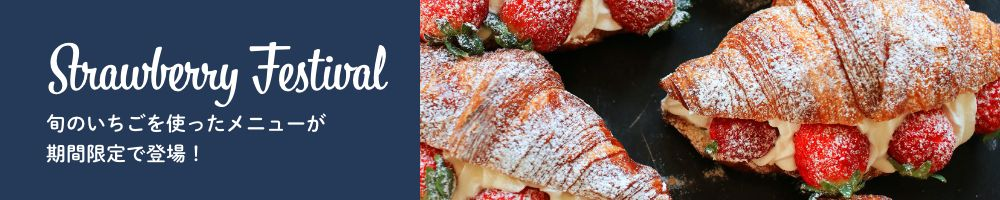

一杯のコーヒーで、ゆったり泳ぐクジラのような安らぎとくつろぎを。正面には太平洋、裏手は山、近くには田んぼがあってのんびりした雰囲気の小さなカフェですが、日常を離れて、思い思いのひとときをお過ごしください。
お知らせ
- 4月30日（土）は、九寺楽町の春祭りに出店するため、お店は休業させていたただきます。春祭りでタルトやキッシュ、コーヒーも販売するので、ぜひお越しください。
- 3月21日（月・祝）は、18時からアコースティックギターデュオ「PICNIC」のライブを開催します。入場料は1,500円、ワンドリンク付きです。
- 3月1日（火）は、KUZIRA CAFE 10周年記念を記念してワールドコーヒーツアーを開催します。世界中から厳選した豆で10種類のコーヒーを淹れます。ふだんはなかなか会えない味をお楽しみください。
- 2月1日（火）Studio947さんにご協力いただき、サイトをリニューアルしました！
店舗情報
| 住所 | 〒199-9999 或留県九寺楽市九寺楽町3-30-8（地図） |
|---|---|
| 電話番号 | 09-9280-2611 |
| 営業時間 | 10:00～22:00 |
| 定休日 | 水曜日・日曜日 |
| ご予約 | ご予約は、お電話もしくはお問い合わせフォームより受け付けております。ご予約希望日時と人数をお知らせください。※フォームからのご予約にはお時間がかかる場合がございますので、ご了承ください。 |